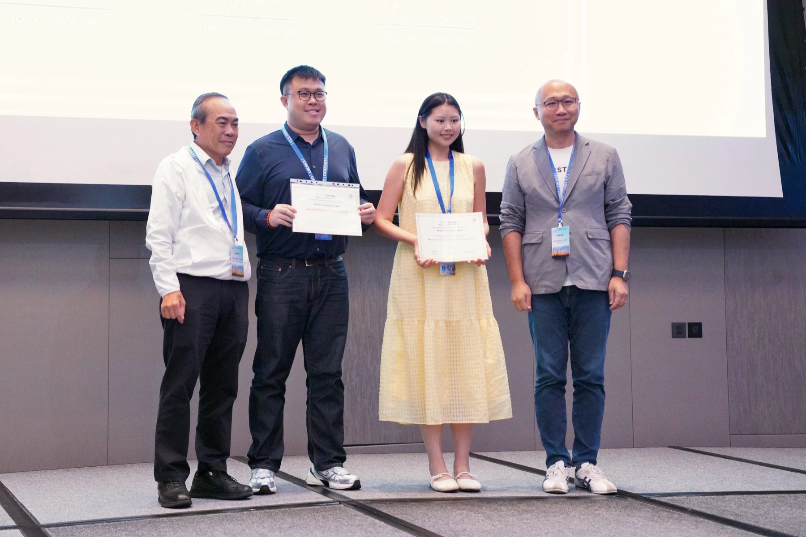
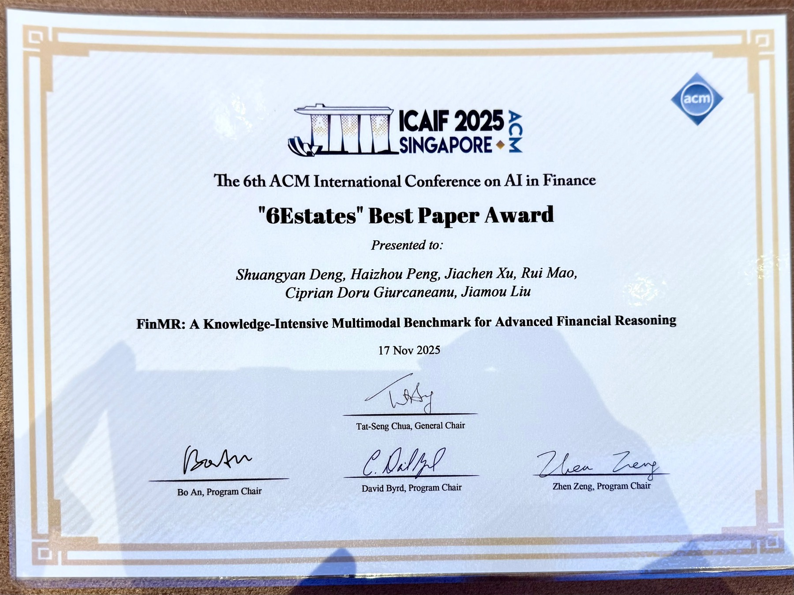
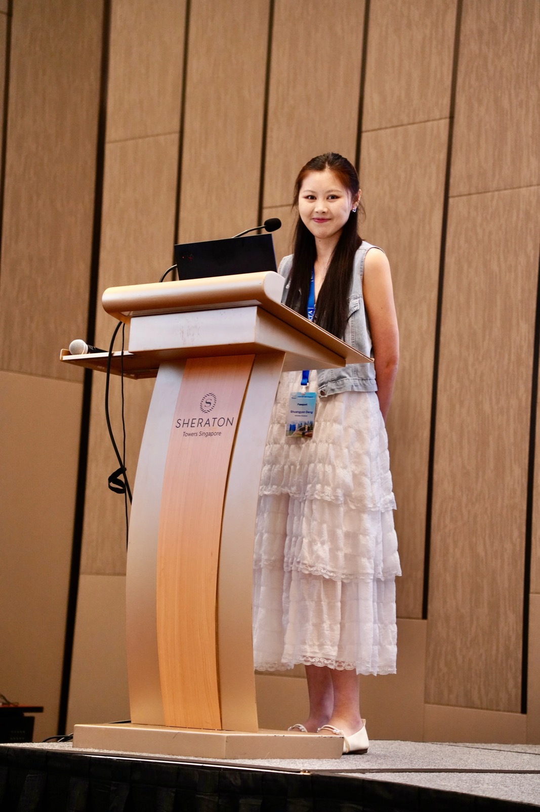

Multimodal Financial Reasoning
Designing benchmarks and methods for advanced financial reasoning across textual, numerical, and multimodal evidence.
Ph.D. Student in Statistics
I am a Ph.D. student in Statistics at the University of Auckland, supervised by Associate Professor Ciprian Doru Giurcaneanu. My research focuses on AI in the financial domain, especially multimodal financial reasoning and stock price prediction.
About
Prior to my doctoral studies, I earned a Bachelor's degree in Finance from Anhui University in China and a Master of Science from the University of Leeds.
My work develops benchmarks, methods, and evaluation frameworks for financial reasoning with multimodal AI systems. I am particularly interested in how language, market data, and other evidence sources can support reliable reasoning in financial decision-making tasks.
Research
Designing benchmarks and methods for advanced financial reasoning across textual, numerical, and multimodal evidence.
Studying how AI systems reflect on errors, acquire evidence, and improve robustness in complex financial tasks.
Applying machine learning and multimodal information to financial forecasting and market understanding.
Selected Work
FinMR: A Knowledge-Intensive Multimodal Benchmark for Advanced Financial Reasoning
Best Paper Award Scholar
CLER: Improving Multimodal Financial Reasoning by Cross-MLLM Error Reflection
Multi-source Multi-level Multi-token Ethereum Dataset and Benchmark Platform
Multi-Agent SEA: Step-wise Evidence Acquisition for Multimodal Financial Reasoning
Personalized Diabetes Care: Discovering Diabetes Mindset Disparities From Metaphorical Cognition
Bridging Cognitive Divide: Uncovering Cognitive Disparities among Diabetic Patients via Metaphor
Background
Recognition
Moments



CV
The latest version of my CV is available upon request. A downloadable
PDF can be added here later as cv.pdf.
Contact